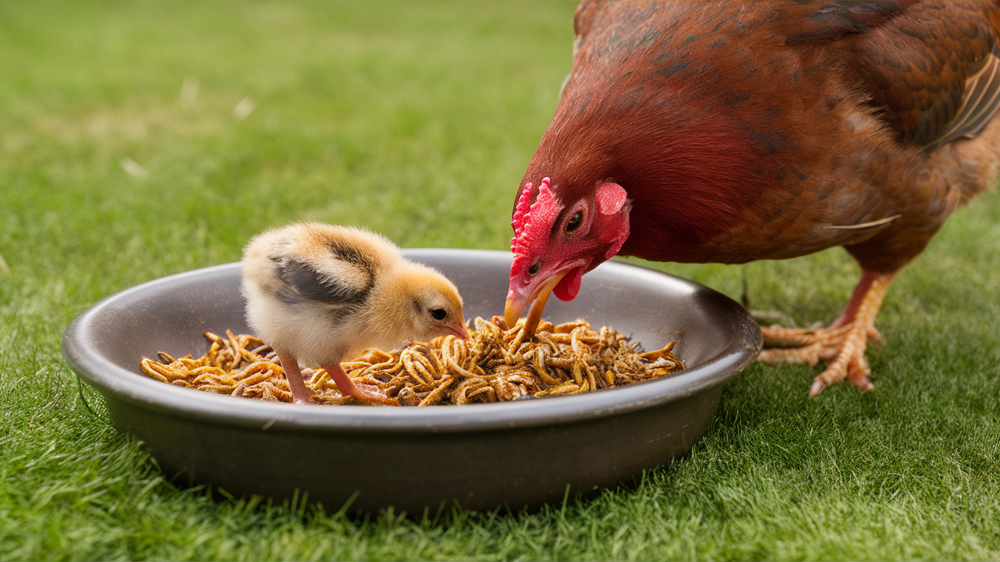

Faydaları

Un kurtları, hayvanlarınız için mükemmel bir protein kaynağıdır.
Yüksek protein içeriği ve sağlıklı beslenme protokollerimiz sayesinde, hayvanlarınızın sağlıklı bir şekilde büyümesine ve gelişmesine önemli katkılar sağlar.
Ayrıca, un kurtları kolay sindirilebilir özellikleri ile dikkat çekerken, zengin içerikleri sayesinde bol miktarda vitamin ve mineral sunmaktadır. Bu besin öğeleri, hayvanların genel sağlık durumunu güçlendirerek, optimal beslenme gereksinimlerini karşılamalarına yardımcı olur.
Ürünler
Canlı Un Kurdu
Canlı un kurtları, hayvanlarınız için taze ve besleyici bir seçenek sunar. Yüksek protein içeriği ile sağlıklı büyümelerine katkıda bulunur.
Kurutulmuş Un Kurdu
Kurutulmuş un kurtları, uzun süre saklama avantajıyla gelirken, hayvanlarınıza sağlıklı bir besin kaynağı sunar.
Hakkımızda
Merhaba, ben Onur Can Mığırdağı. Yeditepe Üniversitesi Uluslararası Ticaret ve İşletmecilik bölümünde eğitimime devam etmekteyim.
2016 yılından bu yana hobi olarak un kurdu yetiştiriciliğiyle ilgileniyorum. Bu hobi, beni sürdürülebilir bir sosyal girişimcilik projesi geliştirmeye yönlendirdi.
Projemizi desteklemek amacıyla, tavuklara ve balıklara büyüme ve erginlik dönemlerinde un kurdu diyeti uygulayarak çeşitli deneyler gerçekleştirdik.
"Hayal Edin, Gerçekleştirelim" yarışmasında jüri özel ödülüne layık görüldük. Ayrıca, Çinli ve Hint öğrencilerin de yer aldığı bir ekip ile
İngiltere'nin Reading Üniversitesi'nden profesörlere projemizi sunduk ve aldığımız geri bildirimleri titizlikle değerlendirdik.
Güncel araştırmaları sürekli takip ederek işimizi geliştirmeye devam etmekteyiz. Önümüzdeki altı ay içinde, aylık 20 milyon un kurdu
yetiştirebilecek kapasiteye ulaşmayı hedefliyoruz. Bu hedefe ulaşarak, ülkemizde büyük bir öneme sahip olan hayvan yetiştiriciliği sektörüne,
sağlıklı ve verimliliği artıracak yemlerimizle katkıda bulunmayı amaçlıyoruz.
İletişim